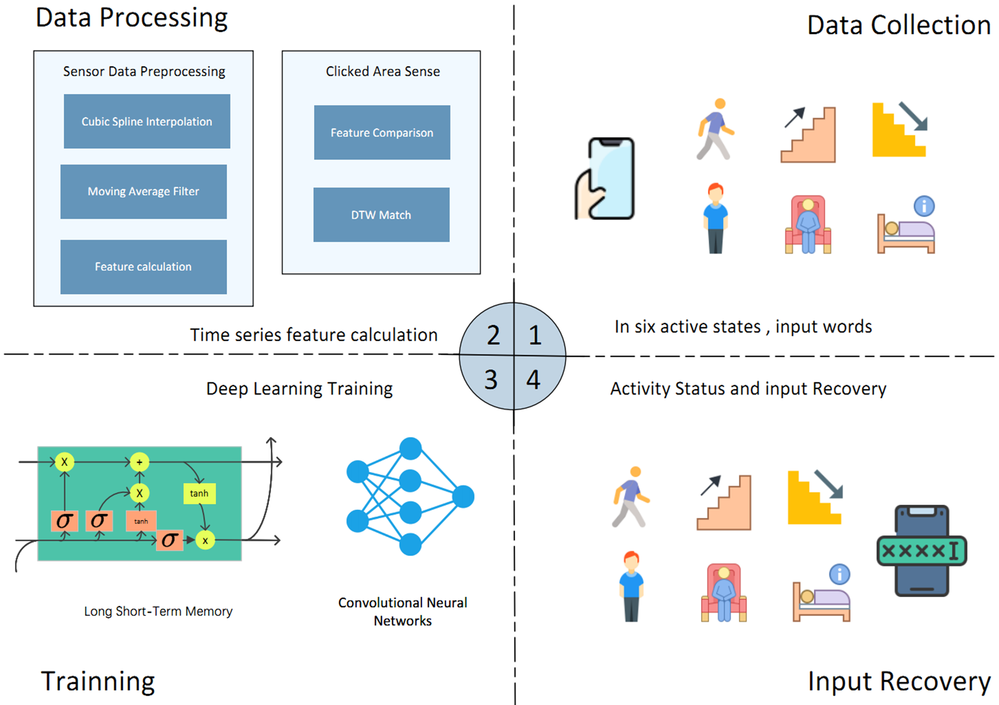

Hongyi Hao 「郝泓毅」
|
| CV |
Email |
Google Scholar |
| Github |
Bilibili |
|
I am a junior undergraduate student majoring in computer science at Shanxi Institute of Technology. I specialize in Software Engineering and Robotics.
Goal: Develop advanced robotic systems that can revolutionize various industries and improve people's lives.
Focus: How to improve the autonomy, safety, and adaptability of robots through innovative algorithms? How to combine artificial intelligence and machine learning to enable robots to learn and make intelligent decisions from different real-world scenarios?
Method: Research and implement state-of-the-art machine learning algorithms, and conduct extensive experiments to optimize robot performance.
Robots: I am passionate about exploring the potential of humanoid robots. My goal is to develop humanoid robots that can perform complex tasks and in challenging environments.
Email: Lanyi_adict [AT] outlook.com
|
- Third Prize in the "Zhongkong Xinda Cup" North China Five Provinces and Hong Kong, Macao and Taiwan College Students Computer Programming Competition (Provincial Level)
- Second Prize in the "Youth Innovation and Entrepreneurship Competition of Shanxi Central Urban Agglomeration 'Creating Youth'" (Provincial Level)
- Excellence Award in the "Maker China" Shanxi Small and Medium - sized Enterprise Innovation and Entrepreneurship Competition (Provincial Level)
- Special Prize in the 19th "Challenge Cup" Shanxi Province College Students' Extracurricular Academic and Technological Works Competition (Provincial Level)
- Second - class Department Scholarship in 2022 - 2023 Academic Year
- Third - class Department Scholarship in 2023 - 2024 Academic Year
- Individual Scholarship in 2023 - 2024 Academic Year
|
- Nanjing Archmind Technology (2023.6 - 2023.8)
Responsibilities and achievements during the internship
- Nanjing Institute of Automation, Chinese Academy of Sciences (2024.6 - Present)
Current research focus and projects involved
- Carnegie Mellon University, Distributed Machine Learning: Foundations and Algorithms (2025.5.10 - 2025.8.8)
Research topic and expected outcomes
|
| Invention Patents and Software Works |
|
Software Copyrights:
- Automatic Geological Radar Data Transmission System V1.0
- Underground Space Concrete Quality Monitoring and Management System V1.0
- Psychological Test Mini - Program V1.0 (2024SR0668850)
- Tunnel Laser Projection Contour Model Making Software V1.0 (2024SR1961537)
- Tunnel Laser Projection Coordinate Conversion Software V1.0
- Programming Language Intelligent Learning Assistance Software V1.0 (2025SR0328689)
- Computer Network Security Protection Software V1.0 (2025SR0380865)
Invention Patents:
- An Automatic Deviation - Correction Drilling Device for Tunnel Inner Walls (CN118361189B)
Design Patents:
- Security Robot (CN308942412S)
- Tunnel RGB laser projection positioning device (CN 309398989 S)
|
|

|
ECHOES: input sensing and rEconstruCtion model utilizing CNN and LSTM witH mObilE Sensor data
Hongyi Hao*
ICICC 2025
webpage |
pdf |
abstract |
bibtex |
arXiv |
code
The widespread integration of sensors such as accelerometers and gyroscopes in smartphones has significantly enhanced user experience, but also introduced new vulnerabilities exploitable by side-channel attacks. These attacks can infer user input by analyzing motion patterns generated during touch interactions. To mitigate this threat and improve input recognition accuracy, we propose ECHOES, a side-channel analysis framework designed to recover user input on touchscreen keyboards. ECHOES comprises two key modules: (i) a sensing module that collects inertial sensor data and virtual memory change patterns, employing convolutional neural networks to detect the user's motion state and classify touch interactions into predefined keyboard regions; and (ii) a language inference module that leverages the click region sequence and natural language processing to reconstruct the user's intended input. To further improve localization under spatial ambiguity, the keyboard is partitioned into five regions to constrain candidate outputs. Experimental results demonstrate that ECHOES achieves 94.01% accuracy in motion state recognition and 91.63% accuracy in input restoration, underscoring its potential for exposing security risks in mobile input systems.
@article{hao2025-echoes,
title={ECHOES: input sensing and rEconstruCtion model utilizing CNN and LSTM witH mObilE Sensor data},
author={Hongyi Hao},
journal={ICICC 2025},
year={2025}
}
|

|
Hongming Intelligent Technology Team 「弘茗智能科技团队」
webpage |
code
Founded by Hao Hongyi at the undergraduate level, we are committed to the research and development of advanced robotics and artificial intelligence systems, and will also conduct research in software engineering, simulator, microelectronics, mechanical design, Reinforcement Learning, Deep Learning and other related directions according to personal development direction.
|
|
{kind=link}